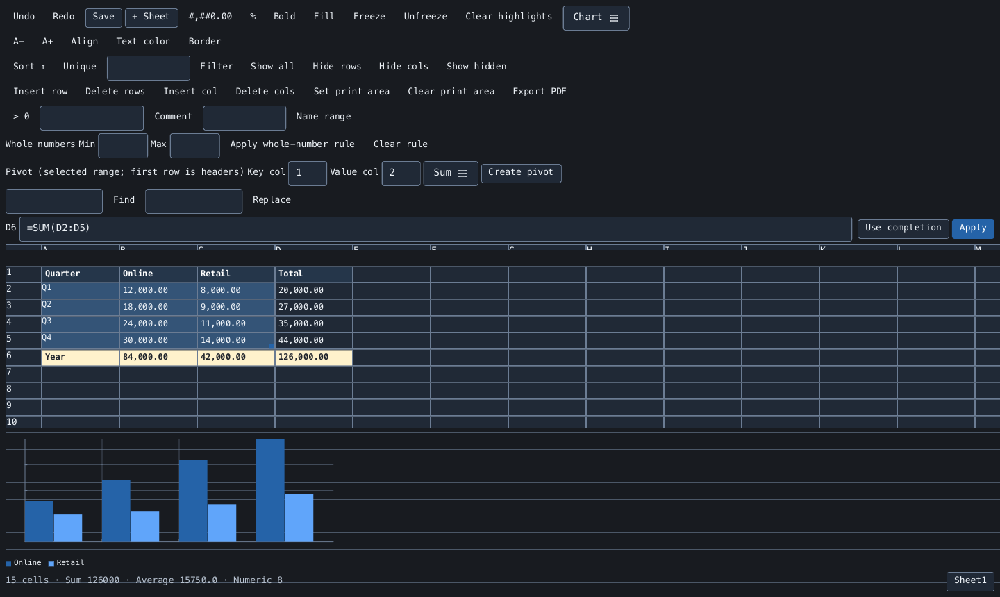

The spreadsheet,
at home in Ruby.
Open a CSV, work with live formulas, and turn your data into a chart or summary. Use the desktop editor, an interactive terminal, or the same workbook from Ruby.
Start with a sheet
gem install rukbat
rukbat sales.csvRuby 3.2 or newer. CSV and TSV input.

- Desktop and terminal
- One editor, selected for your environment
- Live formulas
- Cell, range, and multi-sheet references
- CSV / TSV / PDF
- Tabular files and searchable documents
- Ruby API
- Workbooks without opening a window
From a file to a working sheet.
Keep your inputs, calculations, and summaries together while you work.
- Edit a real grid
- Navigate sparse million-row sheets, edit in place, fill formulas, and undo or redo changes. Only visible cells are rendered.
- See formulas resolve
- Calculate across cells, named ranges, and sheets. Complete function names and inspect a selected range's sum and average.
- Organize the data
- Sort, filter, remove duplicates, and find or replace text. Insert, hide, or freeze rows and columns as you work.
- Make values readable
- Apply number formats, font styles, colors, and borders. Highlight positive values or set whole-number input rules.
- Build a summary
- Create a static Sum or Count pivot, or display line, bar, pie, donut, scatter, area, and stacked charts.
- Choose your output
- Save the active sheet as UTF-8 CSV or TSV, or export formatted cells to a searchable PDF with an embedded font.
Calculate your first total.
Put 12 in A1, 30 in A2, and =SUM(A1:A2) in B1. Change an input and the result updates.
Save writes the active sheet's calculated values. CSV/TSV does not retain other sheets or formatting, and Rukbat does not read XLSX or ODS.
Read about files and limitsOpen a CSV or TSV
rukbat sales.csv
rukbat data.tsvUse the workbook from Ruby
require "rukbat"
book = Rukbat::Workbook.new
book.set(1, 1, 12)
book.set(2, 1, 30)
book.set(1, 2, "=SUM(A1:A2)")
book[1, 2] # => 42